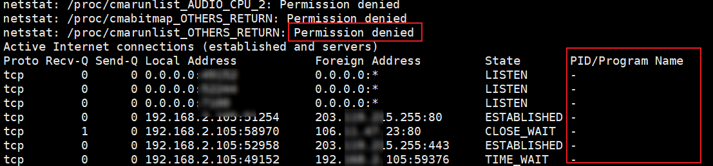
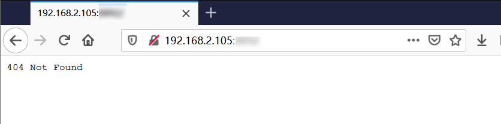
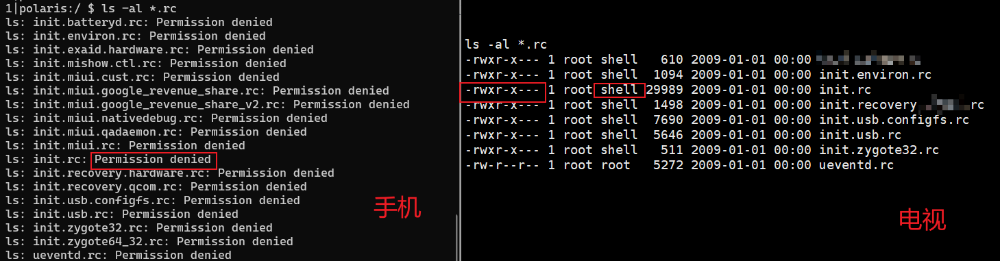
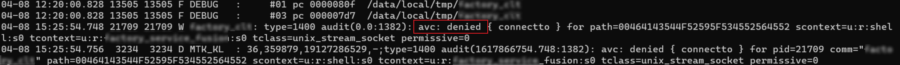
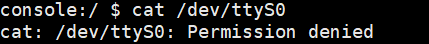
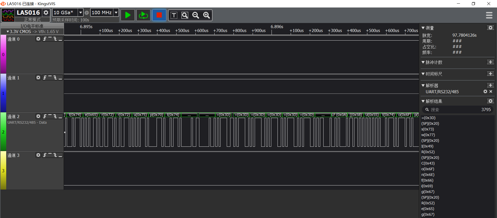
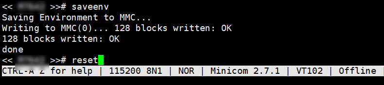
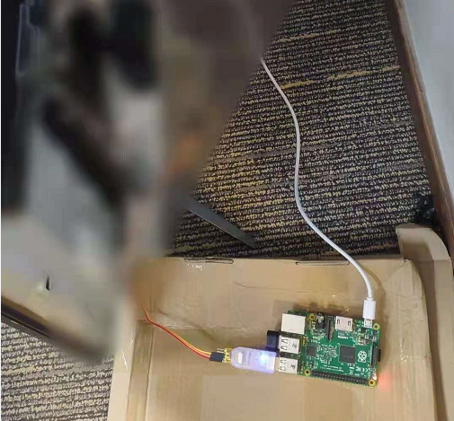

智能电视漏洞挖掘初探之从文件系统分析到提权
智能电视漏洞挖掘初探之从文件系统分析到提权
上一篇文章讲到，通过工程模式等方法获取到了 Android ADB 的 shell，现在就来讲讲后续。
研究智能电视和分析其他 IOT 设备相似，ADB 进来之后，首先看运行的程序、 开放的端口信息。当输入命令 netstat -antp 我都愣住了，长期使用 root 权限的我，从来没见过这阵仗，PID/Program Name 中全是 -，这就很尴尬了。不知道是什么程序启用的端口。

使用浏览器访问其中的一个 WEB 端口，尝试了好些路径都是 404 Not Found。

按传统的 Web 套路，那得 Fuzz 路径。但电视上 Web 服务路径的基本都不是常规路径，那只得分析占用这个端口的应用。netstat 又看不到进程，系统中的文件又是何其的多。单个端口从海量的应用中去分析调用者，费时费力。分析查看不到的原因是，由于 adb 的权限为 shell 权限低，看不到端口对应的进程信息。电视开放了多个端口，一劳永逸的方法仍旧只有提权一条路。
遵循 Linux “一切皆文件” 的思想本质，归根到底还是要回到文件。分析文件之前需要对文件系统有个整体的把握。之前零散的玩过几个 Android 电视，发现文件系统与 Android 的大体相似，但也存在着一些差异。这些电视的文件系统有些共性的东西，正好乘着这次机会把文件系统结构梳理一下。
文件系统结构
Android 智能电视的文件系统结构和 Android 高度相似，但也有些特有的结构。
- Customer -> /tvcustomer/Customer：电视厂商自定义文件，有的电视把开机动画放在这里
- Database -> /tvdatabase/Database: 数据库目录
DatabaseBackup -> /tvdatabase/DatabaseBackup:
bin : 少量可执行文件，目录下的文件大多来自 /system/bin/
- cache : 缓存临时文件夹，访问需要 root 权限
- charger -> /sbin/charger : 指向 /sbin/charger
- config : 配置文件
- data : 用户软件和各种数据。
- local/tmp 临时目录，无权限要求，在这里可以给上传的的文件 chmod 加上执行权限
- app 普通程序安装目录
- data
- <package_name>
- files 应用安装目录
- <package_name>
- default.prop -> system/etc/prop.default : 默认系统属性配置文件
- dev : 存放设备节点文件，如串口等。
- etc -> /system/etc : /etc 指向 /system/etc 配置文件目录
- init : 系统启动的第一个用户程序
- init.usb.rc : 初始化配置文件，厂商自定义功能和名称，一般有多个，这个是针对 USB 的
- lib -> /mnt/vendor/tvservice/glibc :指向 glibc
- lost+found : 回收站
- mnt : 外部存储设备挂载路径，如 U 盘，手机中文件管理器的读取的就在这个路径下 /mnt/sdcard
- odm : odm 的文件，目录下的文件链接自 /vendor/odm/
- oem : oem 的文件，目录下的文件链接自 /vendor/oem/
- proc : 运行时文件，全局系统信息
- product -> /system/product : 指向 /system/product
- sbin : 其中有少量可执行程序
- sdcard -> /storage/self/primary : SD卡中的 FAT32 文件系统挂载的目录
- storage : 内部存储目录
- sys : 内核对象
- system : 系统中最要用的一个目录，大部分内容在这个目录。
- app: 应用目录
- etc: 配置文件
- lib: 库文件
- product: 一些工厂应用
- bin: 可执行文件
- fake-libs: ART虚拟机库文件 libart.so
- lib64: 库文件
- recovery-from-boot.p: 系统刷写使用
- build.prop: 系统配置文件
- fonts: 字体库
- media: 媒体文件
- usr: 用户文件夹
- compatibility_matrix.xml:
- framework : 框架文件 jar 包
- priv-app : 特权应用，不能使用 kill 命令关闭
- vendor -> /vendor: 指向 /vendor
- tmp -> /var/tmp : 临时文件，指向 /var/tmp
- var : 储存各种变化的文件
- vendor : 供应商的程序目录
- bin: 可执行程序
- config -> /vendor/tvconfig/config: 电视的配置文件，多与硬件相关
- default.prop: 默认系统属性配置文件
- etc: 配置文件
- firmware: 存放Wi-Fi 等模块的固件目录
- lib: 库文件
- lib64: 库文件
- lost+found: 回收站
- manifest.xml: 供应商接口文件
- tvcertificate: 电视证书目录
- tvconfig: 电视配置文件
Tips：系统中最重要的目录是 /system/ 和 /vendor/，普通权限也能获取其中大部分的文件。直接 adb pull 有些文件拉不下来，可以先 tar 打包到 /mnt/sdcard 然后在用 adb 下载到本地。
1 | tar czvf /mnt/sdcard/filesystem.tar.gz /vendor/ /system/ |
特有结构
智能电视的根文件系统中有一些特有的文件目录，如 odm、oem、tvconfig、tvservice、tvcustomer、tvdatabase等。
电视也是供应链的产品，也有贴牌的产品。首先把 OEM、ODM、OBM 的定义搞清楚，这几个词。
- OEM（Original Equipment Manufacturer）即原始设备制造商，A方看中B方的生产能力，让B方生产A方设计的产品，用A方商标。对B方来说，这叫OEM。
- ODM（Original Design Manufacturer）即原始设计制造商，A方的技术和设计，被B方看中，B方引进生产，贴上B方标签，对A方来说，这叫ODM；
- OBM（Original Brand Manufacturer），即原始品牌制造商，A自行创立A品牌，B生产、销售拥有A品牌的产品。对A来说，称为OBM。
分析了多个品牌的电视固件后发现，处理器多采用 MTK 平台。电视使用的处理器是 MTK 旗下的 Mstar(晨星)半导体的。刚开始比较纳闷，这俩什么关系，也就刚写东西去查了才知道，2012年 MTK 收购了 Mstar。Mstar 提供智能电视的解决方案，属于 ODM，所以在 /odm 和 /vendor 目录下可以看到他们的文件。
- /odm : 芯片解决方案提供的基础代码，/odm 目录下的文件会链接 /vendor 目录下的同名文件。
- /oem: 多数情况下为空
- /vendor/tvconfig：电视启动阶段的配置文件，多与硬件设备有关。有的电视不使用 /tvdatabase、/tvcustomer,而将这些文件放在这个目录下。
- /vendor/tvservice: 一些电视服务相关的可执行文件和库文件。
- /tvcustomer: 电视厂商自定义文件夹，有的厂商使用存在开机需要的文件，如开机视频等。
- /tvdatabase: 数据库目录,如电视的RGB值、HDMI、音频等。
文件系统分析到提权
理清整个文件系统的结构之后，就开始分析系统中文件了。首先看的是系统的初始化脚本，其中定义很多服务，还有很多初始化命令。去寻找有没有什么可以利用的。运气还不错，看到了一个后门服务。
在初始化脚本发现后门
init.rc 是用户空间执行的第一个程序 init 的配置文件。除了 init.rc，还有形如 init.[名称].rc。这些文件在 Android (MIUI) 普通用户是不可读的，在智能电视中往往是可读的。

init.rc 首先会使用 import 把其他的 rc 文件导入进来，拓展当前的配置。import 属于类型声明中的 Command（命令），另外三个分别是 Actions（行为）、Services（服务）和Options（选项）。下面举几个例子，熟悉一下 init.rc 的语法。
Service
Service 的语法格式：
1
2
3
4service <name> <pathname> [ <argument> ]*
<option>
<option>
...示例：
1
2
3
4
5
6
7
8service console /system/bin/sh
class core
console
disabled
user shell
group shell log readproc
seclabel u:r:shell:s0
setenv HOSTNAME console示例解析：
- 第一行：这里声明了一个名为 console 的服务，console 服务调用 /system/bin/sh 创建一个子进程。
- 第二行：指定服务类为 core。
- 第三行：disable 表示默认不启动。
- 第四行：指定程序运行的用户权限，这里为 shell。
- 第五行：指定程序的所属组，赋予所属组的权限。这里有shell、log以及eadproc。
- 第六行：安全标签，在执行服务之前改变安全级别。
u:r:shell:s0是 SELinux 的安全上下文。 - 第七行：设置系统环境变量 HOSTNAME 为 console。
Action
Action 的语法格式：
1
2
3
4on <trigger>
<command>
<command>
<command>示例：
1
2
3
4
5
6
7on property:ro.debuggable=1
# Give writes to anyone for the trace folder on debug builds.
# The folder is used to store method traces.
chmod 0773 /data/misc/trace
# Give reads to anyone for the window trace folder on debug builds.
chmod 0775 /data/misc/wmtrace
start console示例解析：其中 trigger 是触发条件，当触发条件满足时将依次执行 command。当属性值 ro.debuggable 等于 1 时，启动上述的 console 服务。
后门服务调用分析
在某次漏洞挖局中，在 init.factory.rc(漏洞点已做匿名化处理) 中看到过厂商预留的一个后门服务。
1 | on property:factory.debug=1 |
当 factory.debug = 1 时，会启动一个后门服务 factory，factory 会调用可知文件 /system/bin/factory_app 。从配置可以看到 factory_app 运行时具有 root 权限，利用这个后门执行任意命令提升权限。但编写利用脚本的漏洞时，没有注意 factory 中的 seclabel 选项，直接被 SELinux 阻断了。
SELinux 阻断漏洞利用
在看漏洞利用程序被 SELinux 阻断之前，先来简单了解一下 SELinux。SELinux 主要作用就是最大限度地减小系统中服务进程可访问的资源（最小权限原则）。SELinux 管理过程中，进程是否可以正确地访问文件资源，取决于它们的安全上下文。
安全上下的结构为: 用户：类型：灵敏度：[类别]。
- 用户（User）：类似 UID，提供身份识别，用来记录身份。
- 角色（Role）：标识用户、进程、文件、目录、设备的角色。
- 类型（Type）：用来将主体(subject)和客体(object)划分为不同的组，给每个主体和系统中的客体定义了一个类型；为进程运行提供最低的权限环境；
- 级别（Level）：用 s0、s1、s2 来命名的，数值越大级别越高。
首先看SELinux的状态，Enforcing 代表开启了强模式。
1 | $ getenforce |
再来看当前用户的安全上下文。
1 | $ id -Z |
查看文件的安全上下文。
1 | $ ls -Z /system/bin/factory_app |
回到电视的漏洞挖掘总，在这个后门的利用中，由于权限不满足 SELinux 直接阻止了 unix_domain_socket 的连接。好不容易找到的一个提权点就这样报废了。

Tips：一般到 /etc/ 目录去看配置文件，除了看自启文件和各种配置外。需要重点专注的 SELinux 的策略，被伤过的才记忆深刻。Android 电视中的 SELinux 策略配置的挺严格的，阻断了我的好几个利用链路。
寻找串口绕过 SELinux 实现提权
漏洞利用被阻断，心有不甘。于是想到关闭 SELinux 之后，不就可以执行任意命令了，但是要怎么关闭呢。
1 | $ setenforce 0 |
setenforce 必定是没有权限的，系统级别无法关闭，那就在更早阶段禁用 SELinux。最后发现可以通过 Bootloader 环境变量 bootargs 来禁用 SELinux。修改 UBoot 中的参数，前提是需要进入Uboot。接入 UBoot 找个串口 ，但电视有没拆怎么知道电视有没有串口呢，直接 cat /dev/ttyS0看不了没权限。

查看 /vendor/etc/set_env 中 bootargs 的值。
1 | $ cat /vendor/etc/set_env |grep bootargs |
可以看到使用了串口 ttyS0，波特率为 115200。关键是最后，androidboot.SELinux=permissive，指明了 SELinux 开启了。此时需要拆开电视找到串口，修改 bootargs 的值。
拆开电视正好看到了预留的调试接口，使用万用表找到 GND，使用逻辑分析仪找到 Tx。

使用串口工具连接电视串口与电脑。波特率设置为 115200，进入 BootLoader 修改 androidboot.SELinux 的值就能关闭 SELinux。然后使用上面的被 SELinux 拦截的程序就能获得 Root 权限。
1 | setenv bootargs console=ttyS0,115200 androidboot.console=ttyS0 loglevel=0 root=/dev/ram rw rootwait init=/init CORE_DUMP_PATH=/var/core_dump.%%p.gz KDebug=1 delaylogo=true androidboot.SELinux=disabled enforcing=0 androidboot.dm_verity=disabled |
设置好环境变量后，使用 saveenv 保存修改的值。最后使用 reset 命令重启电视。

拿到 Root 权限后就能更方便的分析应用了。
1 | console:/ # id |
TIPS： 电视串口直连电脑时，我们大多使用杜邦线之类的，调试线的长度比较有限。调试的时候不得不离开舒适的电脑椅，甚至要席地而坐，半天下来身心疲惫。此时可以用树莓派连接串口，我们就能回到舒适的电脑椅上继续肝了。

总结
本文是智能电视漏洞挖掘的第三篇，这一篇从初始智能电视文件系统到权限提升，但仍旧是漏洞挖掘的起点，有了 Root 权限才能对应用和服务进行深入的研究，后面会再分享一些对应用和固件等方面的研究。有点其他事情，会断更一段时间，静候。